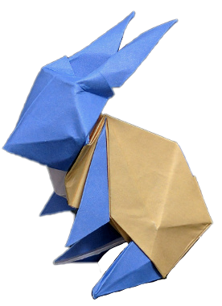

Trang web này là trang web cá nhân, mình tạo ra để chia sẻ đủ thứ trên trời dưới bể, có thể là những câu chuyện về một phần cuộc sống của bản thân mình, chia sẻ về những kinh nghiệm trong quá trình học tập hay làm việc, chia sẻ những thủ thuật về máy tính, điện thoại, quá trình học lập trình, hãy cũng có thể là những dòng tâm sự hoặc kỷ niệm nào đó, Trang web hiện đang phát triển, mọi ý kiến đóng góp cứ liên hệ trực tiếp với mình.
Đây là sản phẩm web đầu tay của mình, với mục đích ban đầu mình tạo ra với mục đích cho bản thân mình nắm được thời gian học cũng như các thông báo, link học, Nó được tạo ra bởi HTML,CSS và JavaScript thuần và 1 ít JSON
Đây là sản phẩm hỗ trợ việc kiểm tra thông tin đăng ký trước khi đưa lên sever. có thể sử dụng làm thư viện. Mình học được từ anh Sơn Đặng F8. Nó được tạo ra bởi HTML,CSS và JavaScript thuần
Đây là phần CV giới thiệu bản thân mình dành cho nhà tuyển dụng, mình vẫn cần phải chỉnh sửa thêm, Nó được tạo ra bởi HTML,CSS và JavaScript thuần
Đây là phần thư viện toast và button, có thể tái sử dụng được, mình học được từ anh Sơn Đặng F8 Nó được tạo ra bởi HTML,CSS và JavaScript thuần
Nhắn gửi gió , ( đến ) ai đó hãy cố gắng lên Dẫu đường đời (vốn) trông gai tấp nập Nếu thấy mệt mỏi hãy chia sẻ cùng tôi Tuy không giúp (được) nhưng tôi đây sẽ cố Sáng canh hai vừa nằm chợp mắt Đã mơ về hình bóng nhỏ nhắn ( của ) một ai Người gầy còm vì bao nhiêu gian khổ Rồi trở thành sự điên loạn không nguôi Tôi hối hận và tiếc nuối vô kể Không ở cạnh chăm sóc được người tôi thương Hạt mưa nặng , khẽ rơi xuống bên vai Cả đất trời cùng tôi bừng tỉnh Nhắn ai đó cứ mỗi buổi sớm mai Giữ sức khỏe và luôn luôn tươi tắn Bao muộn phiền hôm qua vứt bỏ Ăn uống đủ , ngủ nghỉ đủ nghe nha Khó khăn gì (cũng ) chẳng theo ta mãi Cứ bình thản rồi mọi chuyện sẽ qua Đừng lo nghĩ nhiều quá lên nha Cuộc đời này còn bao điều thú vị Nhớ đến rồi hãy chia sẻ cùng tôi Nhắn ai đó cũng như nhắn tới ta Cố gắng lên , mình còn làm được (hơn ) nữa Bản thân mình vẫn còn quá trẻ Lớn hơn dần tất cả cùng lớn theo Nếu thấy mệt thì dừng chân giây lát Hết mệt rồi thì vững bước tiến lên
Nhớ Nhớ Người vất vả sớm khuya Nhớ Người vất vả từ trưa đến chiều Nhớ Ai gánh vác bao nhiêu Nhớ Ai tần tảo sáng chiều nắng mưa Thương Người mang nặng đẻ đau Thương Người nhặt từng cọng rau đem về Thương Người lo lắng nhiều bề Thương Người chịu cả lời "chê" bên ngoài Cố gắng làm để sau đỡ vất vả Cố gắng cả nhiều những thứ xung quanh Cố hoàn thiện bản thân thêm nữa nữa Cố gắng để khôi phải hổ với "Ai" Nhiều khi mải mê những điều bên ngoài kia mà con quên mất Người luôn luôn ở phía sau tất cả dõi theo con Rồi cả những khi "tự thấy " bản thân "cô đơn" nhất Con vẫn quên vẫn có người ở bên con Lúc sóng gió ốm đau , con vẫn luôn thu mình lại Cứ nghĩ vậy là Người không phải lo nghĩ về con Nhưng con vẫn luôn sai , vẫn luôn sai như những đứa trẻ khác Người vẫn vậy vẫn luôn theo sát bên con Cảm ơn Người đã cho con tất cả